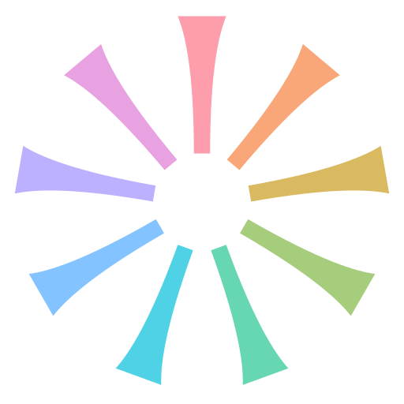
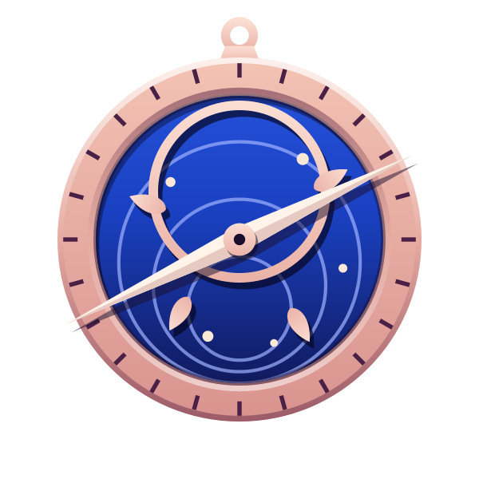

MouseionChat · name round 1
A name for Mouseion Chat
Six candidates, set in the house face. Each is shown three ways on both grounds: as a name, beside the works that already have names, and on a phone. The small drawings show the thing behind each name. They are not marks.
The house so far, and the move each name makes
The house in Alexandria
A famous work

OdysseyThe plain word in GreekAtmos
A personAda
No name yetChat · Notes · Media · Hub
The candidates
Also considered
Lesche
Greek for a room to talk in. Hard to say
Symposion
Friends talking over wine. Long
Diple
The > sign from the same margins as the asteriskos. Hard to say
Pinax
A writing tablet. Its plural, Pinakes, suits a catalogue better
Skytale
A Spartan cipher rod. Reads as sky tale
Hermes
The Odyssey's messenger. Used everywhere
Pharos
The lighthouse. Better kept for alerts